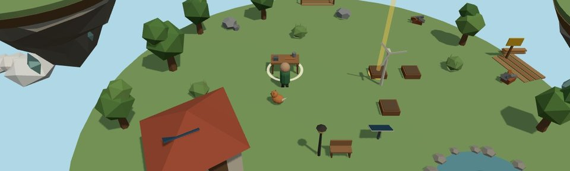
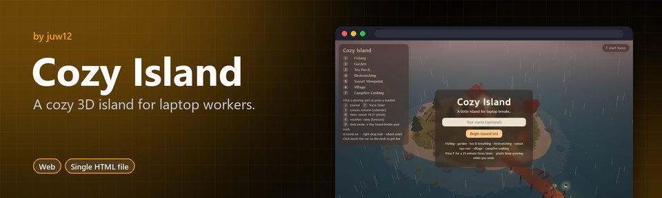
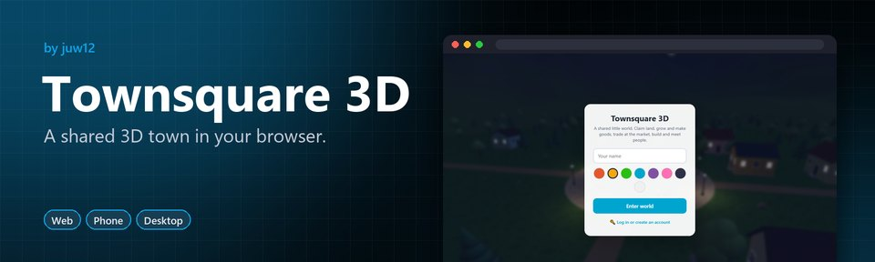
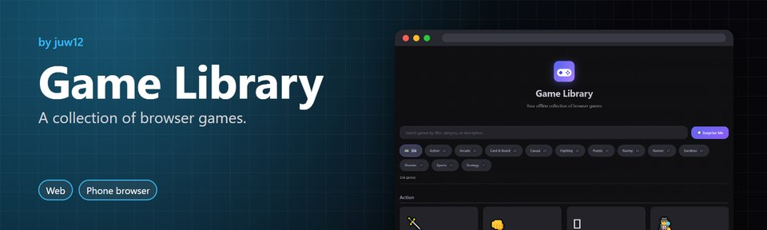
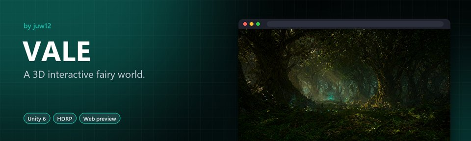
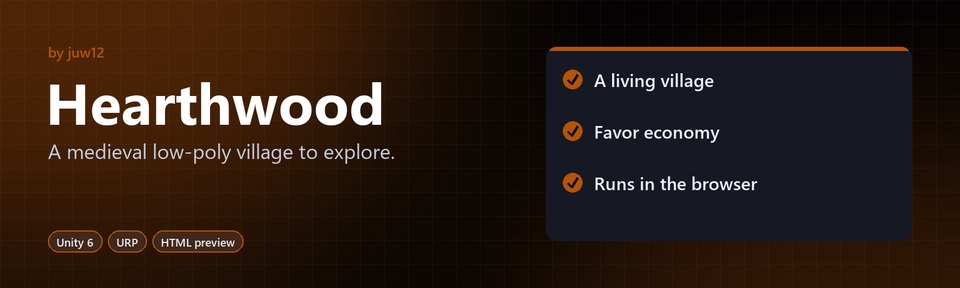

 Teduh Life sim · works offline A cozy solarpunk life sim on floating islands: farm, fish, craft, run your island on sun and wind, and build the sky village with friends. Play Source
 Cozy Island Relaxing 3D · for laptop breaks Fish, garden, take tea-breathing breaks and rest your eyes, with Mochi the cat. Play Source
 Townsquare 3D Shared town · phone and desktop Claim land, run crops and workshops, and trade at a market that follows supply and demand. Play Source
 Game Library Collection · works offline A searchable collection of small browser games by category, with a Surprise Me button. Play Source
 VALE Unity 6 + HDRP · first-person Explore a fading fairy realm and collect five Lumenshards to restore it. Open Source
 Hearthwood Unity 6 + URP · prototype A third-person action-adventure prototype in a medieval village, with dialogue, quests, inventory and NPC AI. Open Source